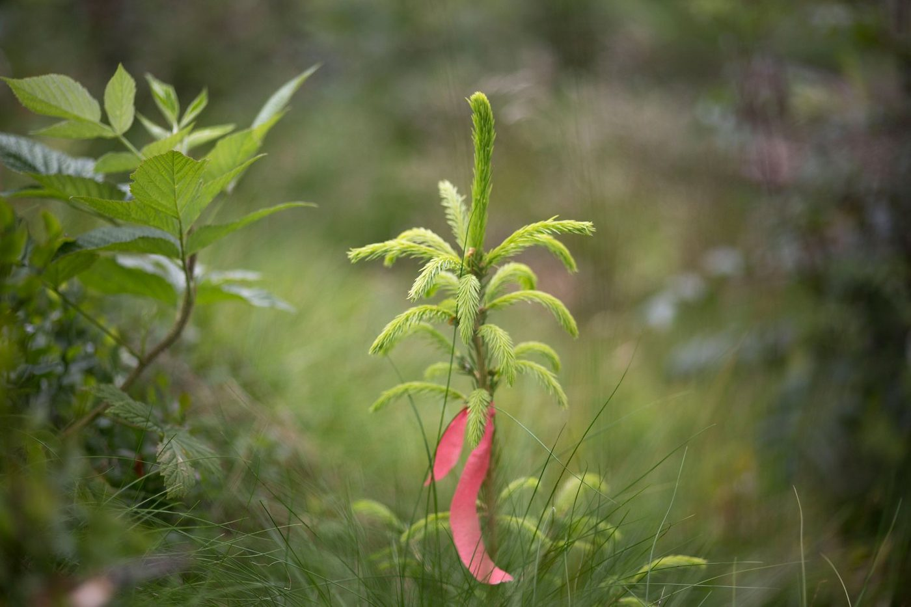

Katie Paterson
Future Library, 2014–2114
In 2014 Paterson planted a thousand spruce saplings in Nordmarka forest outside Oslo. Every year since, one writer has handed over a manuscript that nobody is permitted to read. Margaret Atwood wrote the first.
The texts are held in a silent room lined with wood from the clearing, inside the Deichman library in Bjørvika, where visitors can see the sealed manuscripts but not open them. In 2114 the trees will be felled and the hundred texts printed on their paper. Paterson will be dead by then, as will every contributor and almost everyone who has ever stood in the room.
Figure
The artist
Katie Paterson · Born 1981 in Glasgow; lives and works in Scotland.
Paterson works at scales that do not fit a human life. She has broadcast Beethoven to the moon and back, mapped every dead star, made a light bulb that simulates moonlight and buried a grain of sand carved to a two-hundredth of a millimetre back inside the Sahara. The method is consistent: take an enormous astronomical or geological fact, and find the one small object or gesture that lets a person stand next to it. Her collaborators are usually scientists, and the works are usually quiet. Future Library is the furthest she has pushed the approach, because the audience it is made for has not been born.
“Looking through the lens of deep time inevitably changes how you see the present.”
Curators’ note
Stand in the Silent Room in Oslo and there is nothing to read. A hundred manuscripts, or the twelve that exist so far, sit behind glass in drawers with the author's name and the year on them, and nothing else. You cannot open them. Neither can the librarians. Paterson has made a collection whose entire value sits in a year none of us will see, and which depends on a public library and a forest both outlasting everyone now alive. That is the deposit in its purest form. It asks for trust and offers nothing back inside a human lifetime.
Afterwards, the artist’s own record of the work: futurelibrary.no